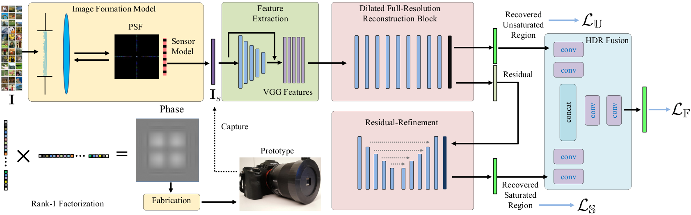
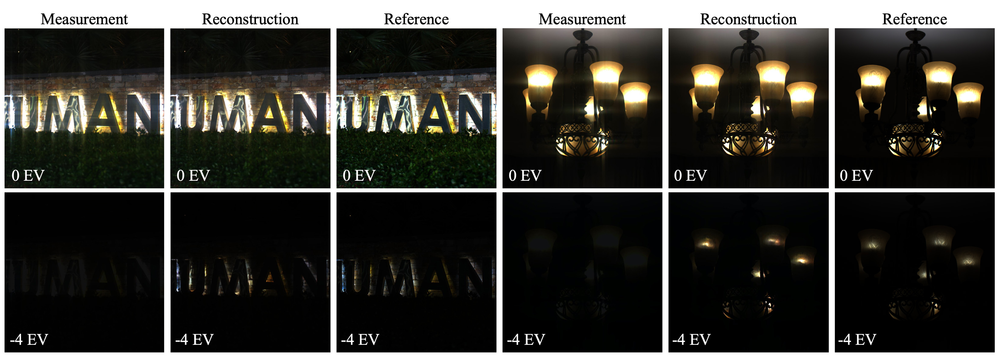

Learning Rank-1 Diffractive Optics for Single-shot High Dynamic Range Imaging
Learning Rank-1 Diffractive Optics for
Single-shot High Dynamic Range Imaging
We present a single-shot real-time HDR imaging technique. High dynamic range information is spatially encoded in a single image using a learned optical element, creating streak-like encodings, and a specialized reconstruction network to recover the HDR image from such measurements.
|
High-dynamic range (HDR) imaging is an essential imaging modality for a wide range of applications in uncontrolled environments, including autonomous driving, robotics, and mobile phone cameras. However, existing HDR techniques in commodity devices struggle with dynamic scenes due to multi-shot acquisition and post-processing time, e.g. mobile phone burst photography, making such approaches unsuitable for real-time applications. In this work, we propose a method for snapshot HDR imaging by learning an optical HDR encoding in a single image which maps saturated highlights into neighboring unsaturated areas using a diffractive optical element (DOE). We propose a novel rank-1 parameterization of the DOE which drastically reduces the optical search space while allowing us to efficiently encode high-frequency detail. We propose a reconstruction network tailored to this rank-1 parametrization for the recovery of clipped information from the encoded measurements. The proposed end-to-end framework is validated through simulation and real-world experiments and improves the PSNR by more than 7 dB over state-of-the-art end-to-end designs.
|
Paper
|
Qilin Sun, Ethan Tseng, Qiang Fu, Wolfgang Heidrich, Felix Heide
Learning Rank-1 Diffractive Optics for Single-shot High Dynamic Range Imaging
CVPR 2020 (Oral)
|
Video Summary
Our camera prototype (top left) using our manufactured diffractive optical element (bottom left) along with video summary (right).
|
End-to-end Designing Framework

|
Framework for end-to-end designing and stagelized reconstruction.
Our end-to-end pipeline consists of the image formation model and CNN reconstruction. Our CNN is divided into several stages that focus on separating the encoding from the captured LDR image, recovering the highlights, and fusing the recovered unsaturated and saturated regions to produce the final HDR prediction. After fabrication our image formation model is replaced by real-world captures.
|
Selected Results

|
Single-shot HDR imaging using specialized diffractive optic.
Our fabricated DOE and catered reconstruction network allows us to perform snapshot HDR imaging. This is shown in the above real-world captures using our prototype. The DOE first spreads energy from saturated highlights into neighboring unsaturated regions. These streak encodings are used by our reconstruction network to recover the clipped highlights. The network also simultaneously removes the encoding streaks from the captured image. Both the DOE and the network are optimized end-to-end using a fully differentiable image formation model.
|
Capturing dynamic HDR scenes.
Our technique allows us to image complex dynamic HDR scenes that would be difficult to capture using traditional burst capture methods. The scene on the left consists of light sources on a swinging pendulum. Our method allows us to capture the HDR scene while avoiding the motion artifacts introduced by burst capture. The scene on the right consists of a strobe light array with 50 Hz frequency. Our snapshot HDR imaging technique is capable of capturing the light array at a single moment.
|
Outperforming competitor single-shot HDR methods.
We benchmarked our method against state-of-the-art single shot HDR imaging techniques in simulation, and we outperformed them by over 7 dB PSNR. Example qualitative results are shown above. HDR-CNN severely underestimates the intensity of saturated regions. Glare-HDR often leaves artifacts and fails to estimate highlights correctly. The copied peak encodings introduced by Deep Optics for HDR recovery often overlap with the saturated areas and consequently are ineffective for highlight reconstruction. Our method produces accurate highlight reconstructions while also correctly removing encoding artifacts.
|
Application to automative windshield streaks.
Our network's ability to remove streak encodings can also be applied to other types of streaks introduced by grating-like optics. Front-facing automotive cameras suffer from glare induced by thin lines of dust and dirt remaining on the windshield after wiping, see the diagram on the left. These thin streaks of dust produce glare streaks that vary with the wiping pattern on a curved windshield. Removing these streaks can improve autonomous driving at night time. We trained our network to remove these types of streaks and we demonstrate successful removal.
|
{kind=link}
{kind=link}
{kind=link}
{kind=link}
{kind=link}
{kind=link}
{kind=link}
{kind=link}